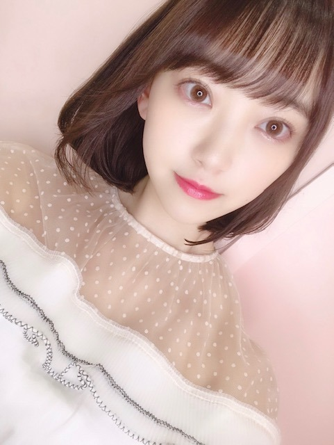
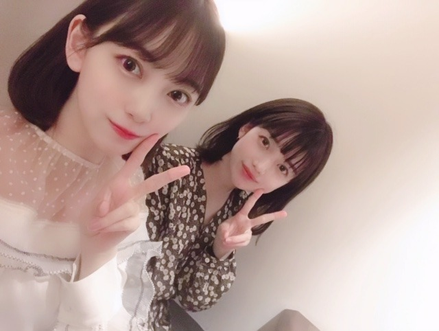
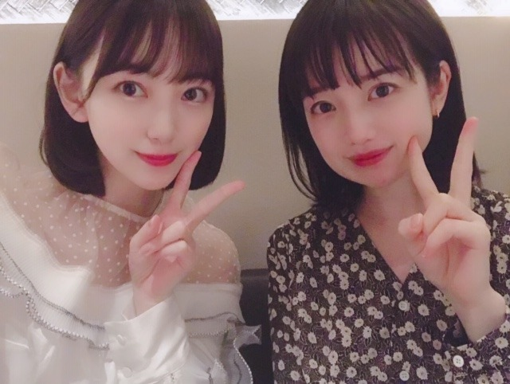
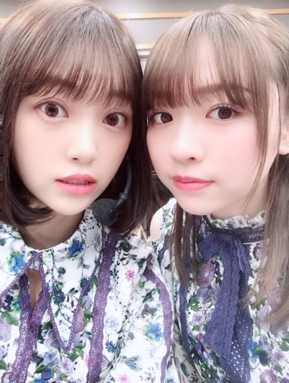

2019/0405Friはちみつ色
もう4月なんですね！
日付感覚が無くなるくらい濃密な毎日を最近は過ごしていましてお知らせしたいことがたくさんあります。
うずうず。待っててね☺︎
そして今日、川の水面を流れる桜を見て
散っても華がある桜が美しくて見惚れました。
そして髪色を変えました〜！

ハニーミルクベージュだそうです☺︎
どうかな...？
honeymilkbeige
蜂さんぶんぶん〜
今回はベージュ系アッシュをいれて透け感を出していただきました！ミルクティー系の色に挑戦したくてでもまだ勇気がないのでまずは、"ミルクベージュ"から！
絢音、みり愛、日奈子が気づいてくれて
いくちゃんも気づいてくれて
みんな褒めてくれたからご機嫌です☺︎笑
光に当たると透けるんだ〜
お気に入り✨
そして実は先日、弘中さんとご飯に行ってきました♡

かわいい〜♡

ずっとかわいいと思っていたら
ずっとかわいいと思っていたら
弘中さんも私のことを気にかけてくださってたみたいで
なんと、両思いなことが判明！
それから仲良くさせていただいています(^-^)
うれぴい(^-^)
好きなものとか価値観とか似ていて
話しやすくて楽しかった〜♪
またいろんな約束をしたので楽しみです！

みり愛は努力家で優しくて変な人で...
妹みたいって前は思ってたけど私よりしっかりしてるので今はもう姉です。笑
一緒に歌ってるアルバム収録曲の"ゴルゴンゾーラ"での歌声もかっこいいし"日常"のダンスもかっこいいし周りをちゃんと見て動ける大人なところも尊敬してるんだ〜
人のいいところをたくさん見つけて知って感じて嬉しい毎日。私も誰かの癒しになれてたらいいな
告知です！
4/27の札幌コレクションに出させていただきます✨
札幌札幌！ラーメン。ウニ。ザンギ。とうもろこし。
応援に来てくださったら嬉しいです。
待ってます！
ではははは
2019/04/05 20:06
コメント(383)
ブログ更新ありがとう！
スゴく似合っています。
それからも応援してます！
スゴく似合っています。
それからも応援してます！
色の名前って無数にあるから、名前を聞いただけではどんな感じかわからないけど、美味しそうな名前の色ですね。
(^ー^)
いろいろ似合うのは、きっとキラキラしているからなのでしょうね。
(^ー^)
いろいろ似合うのは、きっとキラキラしているからなのでしょうね。
髪染める未央奈ちゃん可愛い！！！
黒髪ロング時代も好きだったけど、
明るいショートもオシャレな未央奈ちゃんらしくて、
写真見るとニヤニヤしちゃいますｗ
映画もぜったい見るね～！！！
黒髪ロング時代も好きだったけど、
明るいショートもオシャレな未央奈ちゃんらしくて、
写真見るとニヤニヤしちゃいますｗ
映画もぜったい見るね～！！！
堀ちゃんの新しい髪色も透明感も綺麗でめっちゃ好きです！
ブログ更新ありがとう！！！
ブログ更新ありがとう！！！
未央奈、忙しそうだね。
良かったね。
でも、
くれぐれも、
身体にだけは気をつけて下さいね。
しかし、弘中さん…
相変わらず、
幅広い交友関係ですね。
髪色も素敵に変身したし、
春らしく色づいていく未央奈を楽しみにしています。
良かったね。
でも、
くれぐれも、
身体にだけは気をつけて下さいね。
しかし、弘中さん…
相変わらず、
幅広い交友関係ですね。
髪色も素敵に変身したし、
春らしく色づいていく未央奈を楽しみにしています。
未央奈～～～～～～～～。待ってたぁ～～。更新。さくらより、桜餅より、サッポロ味噌ラーメンより、未央奈の方が何倍も綺麗っす(笑)へぇ～～。透ける髪何て、あるんすね。始めて知りました。そして、弘仲アナ。可愛いっすね。未央奈の方がいいけど(照)。で、告知、私、失敗しました。知らなかった。アルバム買えば握手券が入ってるって。もっと調べて買えば良かったァ～～。ショック。というわけで、次回、お会いしましょう。未央奈さん。それまで、痩せておきます(笑)
では。そろそろ。でははははは(真似っ子)
演技、もう少し上手になりたい。2級に昇級が夢。またね。未央っなぁ。バイ
では。そろそろ。でははははは(真似っ子)
演技、もう少し上手になりたい。2級に昇級が夢。またね。未央っなぁ。バイ
可愛い ーー
新しい髪色
かなり素敵ですね〜〜⁉︎
春らしい明るい感じで
大好きです〜〜
そんな堀未央奈さんブログ更新
ありがとう⁉︎(^ ^)
毎日が濃密な日を過ごしているんだね。
まだまだ忙しいかと思うけど
体調崩しているみたいなので
ゆっくり休んでくださいね⁉︎
色々情報公開されてきているね⁉︎
オンエア楽しみ〜〜⁉︎
かなり素敵ですね〜〜⁉︎
春らしい明るい感じで
大好きです〜〜
そんな堀未央奈さんブログ更新
ありがとう⁉︎(^ ^)
毎日が濃密な日を過ごしているんだね。
まだまだ忙しいかと思うけど
体調崩しているみたいなので
ゆっくり休んでくださいね⁉︎
色々情報公開されてきているね⁉︎
オンエア楽しみ〜〜⁉︎
ブログ更新ありがとう！
未央奈可愛い、その髪色めっちゃ似合ってるー
みりあと２人も弘中さんと２人もどっちも可愛い
ずっと応援してるよー
未央奈可愛い、その髪色めっちゃ似合ってるー
みりあと２人も弘中さんと２人もどっちも可愛い
ずっと応援してるよー
堀ちゃん、ブログ更新ありがとう。
ハニーミルベージュに染めた髪とても綺麗だね。
堀ちゃんにとてもお似合いの色でとても可愛いね。
ハニーミルベージュに染めた髪とても綺麗だね。
堀ちゃんにとてもお似合いの色でとても可愛いね。
素敵な髪色！
みりあとのコンビまじすき！！
そして髪色似合いすぎ
そして髪色似合いすぎ
髪色優しくって
カワイイ感じがしていいと思う！！
弘中アナ！激レアさん観てますよっ！！笑
てか、この堀ちゃんの人脈の広さは
堀ちゃんに何か特別な魅力が
あるからなのかっ？！
堀ちゃん癒しになってるよー♪
みり愛ちゃんの癒しにも
なってるんじゃないかなー笑
カワイイ感じがしていいと思う！！
弘中アナ！激レアさん観てますよっ！！笑
てか、この堀ちゃんの人脈の広さは
堀ちゃんに何か特別な魅力が
あるからなのかっ？！
堀ちゃん癒しになってるよー♪
みり愛ちゃんの癒しにも
なってるんじゃないかなー笑
みおな
なるほどねー。
髪色っていろいろあるのねー。
ほぉ。弘中アナ。
ん？
あの局じゃん！
なるほどねー。
髪色っていろいろあるのねー。
ほぉ。弘中アナ。
ん？
あの局じゃん！
とてもかわいいです これからもずっと応援してます！
未央奈ブログ更新ありがとう☆
弘中アナとの写真双子みたいでかわいいね！
弘中アナとの写真双子みたいでかわいいね！
こんばんわ＼(ーωー)／
ハニーミルクベージュか、美味しそうな名前だ♪
なんか、ミルクコーンポタージュを飲みたくなってきた。
あと、ゴルゴンゾーラチーズ食べたいなあ。
・・・乳製品が欲しくなる季節なのか？？
ハニーミルクベージュか、美味しそうな名前だ♪
なんか、ミルクコーンポタージュを飲みたくなってきた。
あと、ゴルゴンゾーラチーズ食べたいなあ。
・・・乳製品が欲しくなる季節なのか？？
ブログ更新ありがとうございます！！
今日ね！夢でね！未央奈ちゃんが俺の彼女で出てきたからびっくりした！
テストの点数勝負したり、水族館行ったり楽しかった！！
夢に出てくれてありがとう！笑
体調には気を付けてこれから頑張って下さい！
今日ね！夢でね！未央奈ちゃんが俺の彼女で出てきたからびっくりした！
テストの点数勝負したり、水族館行ったり楽しかった！！
夢に出てくれてありがとう！笑
体調には気を付けてこれから頑張って下さい！
更新ありがとー！
髪色とても似合ってる！
髪色とても似合ってる！
その髪色めっちゃ好き
みおな、こんばんは(^_^)
髪色、とても似合ってて可愛い＼(^o^)／
ハニーミルクベージュ、覚えた！
みおなには、いつも癒されてるよ～(^_^)
可愛い姿はもちろん、声にも癒されてるよ(^o^)／
歌声も好き！
それじゃ、またね(^o^)／
髪色、とても似合ってて可愛い＼(^o^)／
ハニーミルクベージュ、覚えた！
みおなには、いつも癒されてるよ～(^_^)
可愛い姿はもちろん、声にも癒されてるよ(^o^)／
歌声も好き！
それじゃ、またね(^o^)／
可愛い可愛い！！！！！いつも癒されてる！！！！個握楽しみだな〜早く会いたい❤︎❤︎
髪色かわいい！！
弘中アナと未央奈ちゃんのツーショットとか
最高^_^
応援してます。映画早く見たいな
弘中アナと未央奈ちゃんのツーショットとか
最高^_^
応援してます。映画早く見たいな
イイ感じの髪の色、似合ってて素敵ですね。
まだ少し肌寒い日が続きますが、
体調を崩さないように気をつけて下さいね。
まだ少し肌寒い日が続きますが、
体調を崩さないように気をつけて下さいね。
いいよいいよいいよ、グッド。。
可愛すぎー！
未央奈可愛すぎな
弘中さんも可愛い
みりあも可愛い
でもやっぱり1番は未央奈しかいない！！！！！！！！
愛してるの言葉じゃ足りないくらいに君が好き！
愛してるの響きだけで強くなれる気がしたよ
これからも頑張れ！
活躍心から期待してるよ！
弘中さんも可愛い
みりあも可愛い
でもやっぱり1番は未央奈しかいない！！！！！！！！
愛してるの言葉じゃ足りないくらいに君が好き！
愛してるの響きだけで強くなれる気がしたよ
これからも頑張れ！
活躍心から期待してるよ！
スープカレーもよかったら食べてね(^-^)
スイーツやお菓子も美味しいよ♪
スイーツやお菓子も美味しいよ♪
1枚目の写真って撮影現場での(・◇・｡)?
キレイにキャッチアイが！
み～ﾀﾝのお知らせ早く知りたーいщ(ﾟДﾟщ
キレイにキャッチアイが！
み～ﾀﾝのお知らせ早く知りたーいщ(ﾟДﾟщ
髪色いい！めっちゃかわいい！
昔は水面を漂う桜はあまり好きじゃありませんでした
水面に落ちさえしなければ、
また、宙を舞えるのに
ひらひらと風と光に抱かれた、立体的で躍動的な桜吹雪が大好きだった自分はとくに、ただただベタッと水面にはりついた桜をみじめにさえ感じていました
堀ちゃんは、秋と春の境目はどこだと思いますか
昼と夕方の境目は
友だちとそうでない人の境目は
人間のアクションて反射的なものと、意識的なものがあるとおもったりしています
例えば、
反射的なものは生物的な仕組だったり、自分が長い年月の間に積み重ねてきた習慣だったりと、
意識的なものなら、自分の頭の中で映像としてイメージしたり、言葉として思考してからすることなどなど
堀ちゃんは言葉の力をどれくらい信じますか
言葉は救いになります、本当に
苦楽を共にした複雑な感情を抱いている相手の言葉でも、たまたま電車で居合わせた見ず知らずの人の言葉でも
同じ言葉でも、
人によって受け取り方は変わってきたりもしてしまいますし、経験してきたものが違うから、仕方のないことですが
絶対的な意味はなくとも、おぼろげながらでも
同じものを描き合おうとする、伝え合おうとする言葉というやつが、とても愛しいと感じる機会が多くなるにてれて、
空気と水中を絶対的に分ける「水面」をおぼろげながらでに揺らす桜の花びらが織物のように広がっていくさまも美しく感じるようになりました。
私は水面下のファンとして、堀ちゃんという風と光の中を舞う花びらに魅了されております！
そして、ブログやライブという水面下の存在と風と光の中を舞う存在とが交流することができる水面にも、大変感謝しております。
私のコメント名 みなも（水面）は、実はこうしてできたのでした！
という壮大なうそをつくのですが(笑)
堀ちゃん～～！ 大好きです～～～！
水面に落ちさえしなければ、
また、宙を舞えるのに
ひらひらと風と光に抱かれた、立体的で躍動的な桜吹雪が大好きだった自分はとくに、ただただベタッと水面にはりついた桜をみじめにさえ感じていました
堀ちゃんは、秋と春の境目はどこだと思いますか
昼と夕方の境目は
友だちとそうでない人の境目は
人間のアクションて反射的なものと、意識的なものがあるとおもったりしています
例えば、
反射的なものは生物的な仕組だったり、自分が長い年月の間に積み重ねてきた習慣だったりと、
意識的なものなら、自分の頭の中で映像としてイメージしたり、言葉として思考してからすることなどなど
堀ちゃんは言葉の力をどれくらい信じますか
言葉は救いになります、本当に
苦楽を共にした複雑な感情を抱いている相手の言葉でも、たまたま電車で居合わせた見ず知らずの人の言葉でも
同じ言葉でも、
人によって受け取り方は変わってきたりもしてしまいますし、経験してきたものが違うから、仕方のないことですが
絶対的な意味はなくとも、おぼろげながらでも
同じものを描き合おうとする、伝え合おうとする言葉というやつが、とても愛しいと感じる機会が多くなるにてれて、
空気と水中を絶対的に分ける「水面」をおぼろげながらでに揺らす桜の花びらが織物のように広がっていくさまも美しく感じるようになりました。
私は水面下のファンとして、堀ちゃんという風と光の中を舞う花びらに魅了されております！
そして、ブログやライブという水面下の存在と風と光の中を舞う存在とが交流することができる水面にも、大変感謝しております。
私のコメント名 みなも（水面）は、実はこうしてできたのでした！
という壮大なうそをつくのですが(笑)
堀ちゃん～～！ 大好きです～～～！
みおなちゃんなにしても
似合うし可愛いですね❤
弘中さんとも仲良しとは
知らなかった、、(°∀°)
交友関係広くて羨ましい！
似合うし可愛いですね❤
弘中さんとも仲良しとは
知らなかった、、(°∀°)
交友関係広くて羨ましい！
堀ちゃんこんばんは！
ブログ更新お疲れ様です。
広中アナとも交流があるんですね～。
髪色、なかなかいいです！
北海道、楽しんでくださいね。
では。
ブログ更新お疲れ様です。
広中アナとも交流があるんですね～。
髪色、なかなかいいです！
北海道、楽しんでくださいね。
では。
髪色すごく綺麗。
ほりっぴ～、ナンチです♪
ブログ更新ありがとう～
喉の具合は大丈夫かな？
通勤電車の中から見る大岡川の桜並木が好き
髪色好きだなぁ
令和初日の握手会で見れるかな
ブログ更新ありがとう～
喉の具合は大丈夫かな？
通勤電車の中から見る大岡川の桜並木が好き
髪色好きだなぁ
令和初日の握手会で見れるかな
堀ちゃん こんばんわー
髪色超似合ってるね。かわいいー！
札幌行くんですね、行きてー、でも遠すぎる 行けないなあ 残念。
チャンピオン、アルバム、シングル、ホットギミック、と楽しみすぎることが目白押しで忙しいです。
ずっと堀ちゃんのファンでいます。
お疲れ様。
髪色超似合ってるね。かわいいー！
札幌行くんですね、行きてー、でも遠すぎる 行けないなあ 残念。
チャンピオン、アルバム、シングル、ホットギミック、と楽しみすぎることが目白押しで忙しいです。
ずっと堀ちゃんのファンでいます。
お疲れ様。
未央奈ほんと可愛い
可愛い
堀ちゃんも僕の癒しになっています！
とても可愛いです！
髪色も似合ってます！
とても可愛いです！
髪色も似合ってます！
未央奈ちゃん可愛い〜
ハニーミルクベージュ、就活終わったら私もその色にしてもらおうかな(*´∀｀*)未央奈ちゃんがやってるとなんでも可愛く見える！いつもありがとう
ハニーミルクベージュ、就活終わったら私もその色にしてもらおうかな(*´∀｀*)未央奈ちゃんがやってるとなんでも可愛く見える！いつもありがとう
未央奈さんブログ更新ありがとうございます
いつも未央奈さんが可愛くて癒されてます
ホットギミックもマンガ買いました。
これからも頑張ってください
いつも未央奈さんが可愛くて癒されてます
ホットギミックもマンガ買いました。
これからも頑張ってください
美味しそうな響きの髪色ですね、良くお似合いです。弘中さんとはMステでは、もう会えませんね。
お疲れ様です!
堀ちゃんこんばんは！
ほんと、あっという間に4月だね〜
花粉も遠ざかっているみたいで嬉しいなぁ。
新しい髪色、めっちゃ似合ってて可愛い♡
堀ちゃんよく髪色変えてるけど、今回の色が個人的に茶髪の中では1番好みです。
どんな髪型の堀ちゃんも好きやで☺︎
弘中アナと堀ちゃんっていう組み合わせに凄く驚きました
Σ（・□・；）
Mステで共演してるイメージやったけどこんなに仲良しだったとは...
2人とも可愛すぎて、写真ずっと眺めれます 笑
確かにみり愛ちゃん大人っぽいよね( ・∇・)
ゴルゴンゾーラ、爽やかな中にクセがあってお気に入りです。
発売が待ち遠しい✨
新しい情報、楽しみに待っておきます^ ^
では。
ほんと、あっという間に4月だね〜
花粉も遠ざかっているみたいで嬉しいなぁ。
新しい髪色、めっちゃ似合ってて可愛い♡
堀ちゃんよく髪色変えてるけど、今回の色が個人的に茶髪の中では1番好みです。
どんな髪型の堀ちゃんも好きやで☺︎
弘中アナと堀ちゃんっていう組み合わせに凄く驚きました
Σ（・□・；）
Mステで共演してるイメージやったけどこんなに仲良しだったとは...
2人とも可愛すぎて、写真ずっと眺めれます 笑
確かにみり愛ちゃん大人っぽいよね( ・∇・)
ゴルゴンゾーラ、爽やかな中にクセがあってお気に入りです。
発売が待ち遠しい✨
新しい情報、楽しみに待っておきます^ ^
では。
未央奈ちゃんこんばんは(^^)
最近コメントさせていただいております♩
髪色かわいいー！とても似合ってる！
ミルクティー系も楽しみにしてます(*^◯^*)
今日の金曜ロードショウ、平成狸合戦ぽんぽこだったよー、見た？
私は初めて見たんだけど、あれ面白いね！
みり愛ちゃんのブログにも、もし見てなかったら未央奈ちゃんと見て〜！と書いてきた笑
ので、機会があれば是非(^^)
それではまた♪( ´θ｀)ノ
最近コメントさせていただいております♩
髪色かわいいー！とても似合ってる！
ミルクティー系も楽しみにしてます(*^◯^*)
今日の金曜ロードショウ、平成狸合戦ぽんぽこだったよー、見た？
私は初めて見たんだけど、あれ面白いね！
みり愛ちゃんのブログにも、もし見てなかったら未央奈ちゃんと見て〜！と書いてきた笑
ので、機会があれば是非(^^)
それではまた♪( ´θ｀)ノ
ミルクベージュの髪色もいいね
大人っぽくて好きです！
大人っぽくて好きです！
みおなー！！髪色あってるよ！！可愛いよー
ゲキレアさんとか見てるけど弘中さんはおもしろくって好きだな (´･ω･`)
先日、数年前乃木どこでロケした郡上八幡と丸デブ、おそらく行きつけの肉屋さんマルハンでハムカツ食べてきました！
初の東海地方上陸の中の岐阜とても楽しかったです！！あと、どれも美味しい➰ー
初の東海地方上陸の中の岐阜とても楽しかったです！！あと、どれも美味しい➰ー


弘中さんかわいいよね。
おすすめコスメ教えてください。